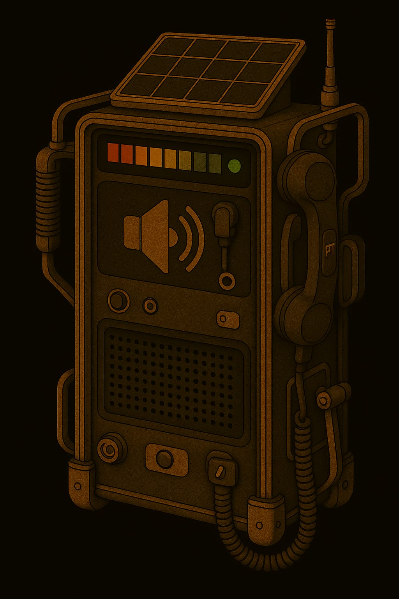
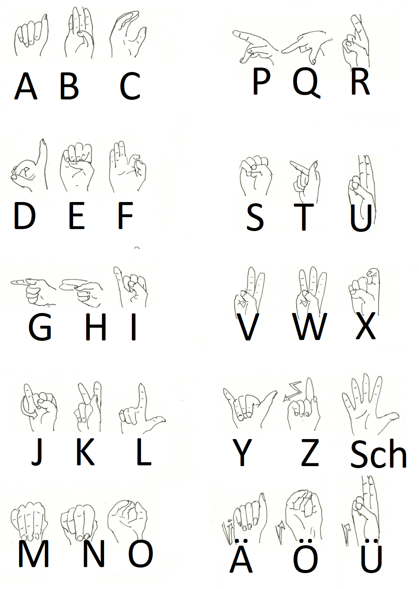

Kommunikation
Kommunikation
1. Gesprochene Sprache
Innerhalb von Gebäuden mit atembarer Atmosphäre braucht man keinen Helm oder Anzug. Hier kann man ganz normal sprechen.
Ausser-Marser chaben gernä ainen AAkzent!
- Titanen: russischer Akzent, die Betonungen sind verschoben
- jedes "ch" => "kch"
- a => aaa
- ch => chch
- h => ch
- gezogene Vokale an den falschen Stellen
- falsches grammatisches Geschlecht
- Merkspruch: ich wiinscht ichch chätte ein Pferdeekutsch
- Barben: französischer Akzent
- jedes "ch" => "sch"
- keine "h"
- a => o
- falsches grammatisches Geschlecht
- Merkspruch: isch säe einö 'übschen Kühlschronk
- Lunare: knauffffeln
- jedes "ch" => "f"
- jedes "s" => "f"
- jedes "sch" => "f"
- jedes "z" => "tf"
- Merkspruch: If se-e nift, waf tu meinft ... gib dof einfaf tfu, daff daf feiffe ift
2. Funkprotokolle, gesprochen
Einleitung
Kommunikation zwischen zwei und mehr Teilnehmern auf ein- und demselben Kanal setzt Disziplin voraus. Damit das klappt, gibt es das Funkprotokoll.
Generell gilt:
- erste denken, dann sprechen
- wer das Gespräch startet, der endet es auch

Hier Beispiele:
Beispiele
Einfach
- Gruppe I von Basis – Kommen
- hier gruppe 1 – kommen
- hier basis - befehl: Suchaktion einstellen – kommen
- hier gruppe 1 - verstanden kommen
- hier basis - ende
Eingespielter Funkverkehr
- Gruppe 1 von Basis, bla bla bla kommen
- hier gruppe x verstanden, ende
Achtung Spruch
- gruppe x von basis achtung spruch kommen
- hier gruppe x achtung sprung kommen
- hier basis ort datum uhrzeit frage / Nachricht wiederholen / kommen
- hier gruppe x ort datum, uhrzeit [wiederholung der nachricht] kommen
- hier basis verstanden

Reihenruf
- gruppe x,y,z von basis laber rhabarber kommen
- hier gruppe x verstanden kommen
- hier gruppe y verstanden kommen
- hier gruppe z verstanden kommen
- hier basis ende
Sammelruf
- alle von basis laber rhabarber kommen
- hier gruppe x verstanden kommen
- hier gruppe y verstanden kommen
- hier gruppe z verstanden kommen
- hier basis ende
3. Gebärdensprache
Mit Helm draussen und ohne Mikrophon oder sonstiogen Funkverkehr kann man draussen sich nicht unterhalten. Der Helm hält den Schall so gut ab; allenfalls kann man sich schreiend unterhalten. Und das ist auf Dauer zu anstrengend.
Draussen unterhalten sich alle in Gebärdensprache. Das heisst:
- Für jedes Wort bzw. für jeden Begriff gibt es ein Zeichen
- Das Verb ist immer hinten, also ICH PFERD SEHEN
- Mund und Mimik sind daran beteiligt
Umsetzung am Rollenspiel-Tisch
- Du kannst DGS (Deutsche Gebärdensprache) => suuper! Verwende die!
- Du kannst keine DGS => unterhaltet euch einfach normal am Rollenspiel-Tisch; denkt aber daran: ihr könnt euch nur auf Sichtweite unterhalten; man kann niemandem hinterherrufen oder von hinten ansprechen :-D
Info: Grossschreibung? Ein Gebärdenbegriff wird durch Grossschreibung markiert.
| spreadthesign | signdict | manimundo |
|---|---|---|
 |
 |
 |
| Lexikon | Lexikon | Lernen |
Finger-Alphabet
Neue Begriffe werden mit dem Fingeralphabet aufgegriffen. Und das findest du hier:

Schrift: Runen
Hier das Runen-"Alphabet" beziehungsweise das sogenannte Futhark. Alles wird in RUnen geschrieben.
Wenn deine Spieler Sppass am Dechifrieren haben => wirf ihnen einfach einen Runentext hin :-) Oder einfache Beschriftungen.
| Rune | Name | Lautwert |
|---|---|---|
| ᚠ | Fehu | f |
| ᚢ | Ūruz | u |
| ᚦ | Þurisaz | th |
| ᚨ | Ansuz | a |
| ᚱ | Raidō | r |
| ᚲ | Kaunan | k |
| ᚷ | Gebō | g |
| ᚹ | Wunjō | w |
| ᚺ | Hagalaz | h |
| ᚾ | Naudiz | n |
| ᛁ | Īsaz | i |
| ᛃ | Jēra | j |
| ᛈ | Perþo | p |
| ᛇ | Eihwaz | e |
| ᛉ | Algiz | a |
| ᛊ | Sōwilō, Sól | s |
| ᛏ | Sōwil | s |
| ᛊ | Tīwaz | t |
| ᛒ | Berkanan | b |
| ᛖ | Ehwaz | e |
| ᛗ | Mannaz | m |
| ᛚ | Laguz | l |
| ᛜ | Ingwaz | i |
| ᛞ | Dagaz | s |
| ᛟ | Ōþila | o |
📖 Morsecode-Tabelle
Insonders KI nutzen gerne Morsezeichen; daraus lassen sich schön und einfach Rätsel kreieren :-)
Es gibt Merkwörter:
- Jede Silbe mit "O" repräsentiert ein —
- eine Silbe einem anderen Vokal "A", "E" "I", "U" (=kein o) repräsentiert ein ·
| Buchstabe | Morse | Buchstabe | Morse | ||
|---|---|---|---|---|---|
| A | · — | Atom | N | — · | Norden |
| B | — · · · | Bohnensupper | O | — — — | O Otto |
| C | — · — · | Coburg Gotha | P | · — — · | Pilotohren |
| D | — · · | Dosenbier | Q | — — · — | Quolsdorf bei Forst |
| E | · | Eis | R | · — · | Revolver |
| F | · · — · | Frankfurt Oder | S | · · · | Sausewind |
| G | — — · | Grossmogul | T | — | Tor |
| H | · · · · | Hausbesitzer | U | · · — | Uhlendorf |
| I | · · | Insel | V | · · · — | Ventilator |
| J | · — — — | Judo Otto | W | · — — | Windrotor |
| K | — · — | Kohlendorf | X | — · · — | Xo ist kein Wort |
| L | · — · · | Limonade | Y | — · — — | Yo und Yoyo |
| M | — — | Motor | Z | — — · · | Zorromaske |
| Zahl | Morse |
|---|---|
| 1 | · — — — — |
| 2 | · · — — — |
| 3 | · · · — — |
| 4 | · · · · — |
| 5 | · · · · · |
| 6 | — · · · · |
| 7 | — — · · · |
| 8 | — — — · · |
| 9 | — — — — · |
| 0 | — — — — — |
Morse-Repräsentation
| Typ | · kurz | — lang |
|---|---|---|
| Piepen | kurz piepen | lang piepen |
| Klopfen | 1x klopfen | 1x klopfen + 0.6 s wartem |
| Klopfen (mit viel Raumlärm) | 1x klopfen | 2x klopfen |
| Klopfen auf verschiedenen Rohren | hoher Ton | tiefer Ton |
- Pause zwischen Zeichen einer Buchstabenfolge ≈ eine halbe Sekunde
- Pause zwischen Buchstaben ≈ 1–2 Sekunden
- Pause zwischen Wörtern ≈ 3 Sekunden oder länger